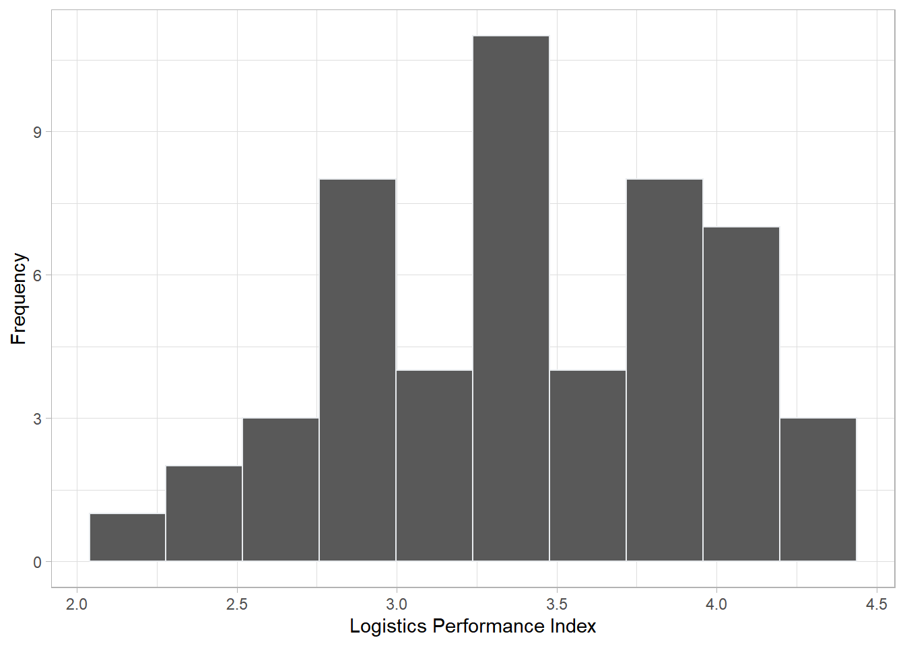
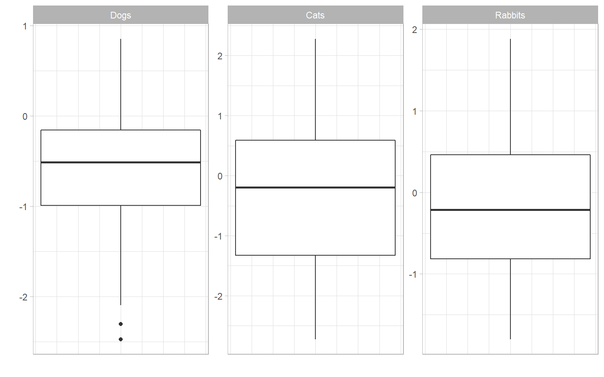

Chapter 5 Initial visualisation and analysis
One of the first things to do with indicator data is to look at it, in as many ways as possible. This helps to get a feel for how the data is distributed between units/countries, how it may be spatially distibuted, and how indicators relate to one another. COINr includes various tools for visualising and analysing indicator data and the index structure.
The types of plots generated by COINr fall into two categories: static plots, and interactive plots. static plots generate images in standard formats such as png, pdf and so on. Interactive plots generate javascript graphics, which have interactive elements such as zooming and panning, and information when you hover the mouse over. These latter type of plots are particularly useful for including in HTML documents, because they are self contained. For example, they can be used in R Markdown documents, then knitted to HTML, or embedded on websites (such as this one - see below), e.g. via the blogdown or bookdown packages. Javascript plots can also be rendered to png and other formats, so can also be used in static documents.
The plotting tools here can be useful at any stage of building a composite indicator or scoreboard, from initial visualisation of the data, to checking the effects of data treatment, to visualising final index results.
5.1 Structure
Independently from the indicator data, a good way to begin is to check the structure of the index. This can be done visually with the plotframework() function, which generates a sunburst plot of the index structure.
The sunburst plot is useful for a few things. First, it shows the structure that COINr has understood. If you get an error here, it is probably an indication that something has gone wrong in the input of the structure, so go back to the input data and check. If it does successfully display the sunburst plot, you can check whether the structure agrees with your expectations.
Second, it shows the effective weight of each indicator (the value is visible by hovering over each segment). This can reveal which indicators are implicitly weighted more than others, by e.g. having more or less indicators in the same aggregation groups.
Finally, it can be a good way to communicate your index structure to other people.
5.2 Distributions
Individual indicator distributions can be visualised in several different ways. For static plots, the main tool is plotIndDist() which generates histograms, boxplots, violin plots, dot plots and violin-dot plots. This is powered by ggplot2, and if you want to customise plots, you should use that directly. However, COINr plotting functions are intended as quick tools to visualise data, with easy access to the hierarchical data set. You can plot individual indicators:

And you can also plot groups of indicators by calling aggregate names (notice that when multiple indicators are plotted, the indicator codes are used to label each plot, rather than indicator names, to save space):

The plotIndDist() function has several arguments. In the first place, any indicator or aggregation (pillar, dimension, index etc) can be plotted by using the dset argument. If you have only just assembled the COIN Object, you will only have the “Raw” dataset, but any other dataset can be accessed, e.g. treated data set, aggregated data set, and so on. You can also target different levels using the aglev argument - for more details see the chapter on Helper functions.
Stand-alone data frames are also supported by plotIndDist() (this can also be achieved directly by ggplot without too much effort):
df <- as.data.frame(matrix(rnorm(90),nrow = 30, ncol = 3))
colnames(df) <- c("Dogs", "Cats", "Rabbits")
plotIndDist(df, type = "Box")
COINr also includes some interactive plots, which are embedded into apps (see later), but can be used for your own purposes, such as embedding in HTML documents or websites.
Since all the plotting functions output plot objects (plotly objects for iplotIndDist, and ggplot2 plot objects for plotIndDist), you can also modify them if you want to customise the plots. This might be a helpful workflow - to use COINr’s default options and then tweak the plot to your liking. In a very simple example, here we just change the title.
iplotIndDist(ASEM, "Raw", "Flights", ptype = "Histogram") %>%
plotly::layout(title = "Customised plot")If you are purely interested in exploring the data, rather than presenting it to someone else, the plots here are also embedded into a Shiny app which lets you quickly explore and compare indicator distributions - see Data Treatment for more details on this.
5.3 Ranks and Maps
While the previous functions concerned plotting the statistical distributions of each indicator, functions are also available for plotting the indicator values in order or on a map.
Here, a single indicator is plotted in order as a bar chart. There is an optional argument to highlight one or more units, using the usel argument.
From a different perspective, we can plot the same data on a map:
Note that this only works if IndData$UnitCode correspond to ISO alpha-3 country codes. If you want to do some more sophisticated mapping R, Plotly has many mapping options, but R in general has all kinds of mapping packages, you just have to search for them. COINr uses Plotly maps to keep things simple and to not depend on too many packages.
COINr has yet more tools to plot data, but let’s leave it at that for the moment. Other tools will be introduced in other chapters.